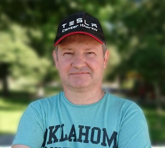

<!DOCTYPE html>
<html lang="en">
<head>
    <!-- <meta charset="UTF-8">
    <meta http-equiv="X-UA-Compatible" content="IE=edge">
    <meta name="viewport" content="width=device-width, initial-scale=1.0">
    <title>Summary</title>
    <link rel="icon" href="./img/favicon.ico" type="image/x-icon">
    <link rel="shortcut icon" href="./img/favicon.ico" type="image/x-icon">
    <link rel="preconnect" href="https://fonts.googleapis.com">
    <link rel="preconnect" href="https://fonts.gstatic.com" crossorigin>
    <link href="https://fonts.googleapis.com/css2?family=Montserrat:wght@400;700&display=swap" rel="stylesheet">
    <link rel="stylesheet" href="css/index.min.css"> -->
</head>
    <body>
    <!-- main container -->
    <!-- <div class="main-container">
        <header class="header">
            <p class="header__p"></p>
            <ul class="header__list list">
                <li class="header__item"><a class="header__link link" href="./index.html"></a></li>
                <li class="header__item"><a class="header__link link" href="./rus.html"></a></li>
                <li class="header__item"><a class="header__link link" href="./eng.html"></a></li>
            </ul> -->
        </header>
        <!--main container for mi-->
        <div class="for-mi">
            <!-- about mi -->
            <section class="about">
                <!-- <h1 class="about__name">Sergey Petukhov</h1>
                <h2 class="about__profession">Autodiagnostic electrician</h2>
                <p class="about__discription">
                    I am an autodiagnostic electrician looking for a permanent job in a car company. I have extensive experience in the field
                    repair and maintenance of cars, and electric vehicles. I can use different
                    diagnostic equipment, good at reading electrical circuits.
                    <br/>I also have a hobby closely related to car repair, this is radio electronics.
                    <br/>I have experience working with electric vehicles. One of my latest achievements is that in a short period of time I mastered the repair and maintenance of a Tesla electric vehicle.
                    <br/>Expected salary $600. -->
            </section> 
            <!-- work experiens -->
            <section class="work-expiriens">
                <!-- <h3 class="work-expiriens-title">Work experience</h3> -->
                <!-- VS Auto -->
                <div class="work-expiriens-company">
                    <!-- <h4 class="work-expiriens__position">Wizard for diagnostics and adjustment of electronic equipment of road transport <span class="work-expiriens__position--color">VS Auto</span></h4>
                    <p class="work-expiriens__period">2021-2022 <span class="work-expiriens__period--color">|</span> Kharkiv, Ukraine</p>
                    <ul class="work-expiriens__list">
                        <li class="work-expiriens__item">Computer diagnostics</li>
                        <li class="work-expiriens__item">Setting up electronic systems</li>
                        <li class="work-expiriens__item">Troubleshooting Electrical Systems</li> 
                        <li class="work-expiriens__item">Maintenance of air conditioning systems</li>
                    </ul> -->
                </div>
                <!-- STROOM -->
                <div  class="work-expiriens-company">
                    <!-- <h4 class="work-expiriens__position"> Technical Director <span class="work-expiriens__position--color">Autosalon STROOM</span></h4>
                    <p class="work-expiriens__period"> 2017-2021  <span class="work-expiriens__period--color">|</span> Kharkiv, Ukraine </p>
                    <ul class="work-expiriens__list">
                        <li class="work-expiriens__item"> Sales, service and repair of Tesla & Nissan electric vehicles </li>
                        <li class="work-expiriens__item"> Technical support for sold electric vehicles</li>
                        <li class="work-expiriens__item"> Development of technical documentation for the maintenance of electric vehicles</li>
                    </ul> -->
                </div>
                <!-- Frunze-Auto Nissan -->
                <div class="work-expiriens-company">
                    <!-- <h4 class="work-expiriens__position"> Electrical Engineer <span class="work-expiriens__position--color">Frunze-Auto Nissan</span> </h4>
                    <p class="work-expiriens__period"> 2012-2016  <span class="work-expiriens__period--color">|</span> Kharkiv, Ukraine </p>
                    <ul class="work-expiriens__list">
                        <li class="work-expiriens__item"> Computer diagnostics of Nissan cars</li>
                        <li class="work-expiriens__item"> Warranty and post-warranty service for Nissan cars</li>
                        <li class="work-expiriens__item"> Repair of electronic systems of Nissan cars</li>
                        <li class="work-expiriens__item"> Chip tuning of electronic components Nissan</li>
                        <li class="work-expiriens__item"> Maintenance of air conditioning systems</li>
                    </ul> -->
                </div>
                <!-- Kharkiv-Аutо SТО-3 -->
                <div class="work-expiriens-company">
                    <!-- <h4 class="work-expiriens__position"> Auto electrician <span class="work-expiriens__position--color">Kharkiv-Аutо SТО-3</span> </h4>
                    <p class="work-expiriens__period"> 2003-2012   <span class="work-expiriens__period--color">|</span>  Kharkiv, Ukraine </p>
                    <ul class="work-expiriens__list">
                        <li class="work-expiriens__item"> Computer diagnostics of cars Vaz, Zaz, Daewoo, Chevrolet</li>
                        <li class="work-expiriens__item"> Warranty and post-warranty service for VAZ, ZAZ, Daewoo, Chevrolet</li>
                        <li class="work-expiriens__item"> Repair of electronic systems of cars VAZ, ZAZ, Daewoo, Chevrolet</li>
                        <li class="work-expiriens__item"> Chip tuning of electronic components</li>
                        <li class="work-expiriens__item"> Injector cleaning</li>
                    </ul> -->
                </div>
                <details class="details">
                    <!-- <summary class="details__more">Courses, trainings</summary> -->
                    <!-- Bosch Service -->
                    <div  class="work-expiriens-company">
                        <!-- <h4 class="work-expiriens__position"> Working with electric vehicles <span class="work-expiriens__position--color">Bosch Service</span></h4>
                        <p class="work-expiriens__period"> 2017 <span class="work-expiriens__period--color">|</span> Kyiv, Ukraine </p>
                        <ul class="work-expiriens__list">
                            <li class="work-expiriens__item"> Electric vehicle device</li>
                            <li class="work-expiriens__item"> Working with the high voltage system of an electric vehicle</li>
                            <li class="work-expiriens__item"> Electric vehicle repair and maintenance</li>
                        </ul> -->
                    </div> 
                    <!-- Nissan Kyiv -->
                    <div class="work-expiriens-company">
                        <!-- <h4 class="work-expiriens__position"> Nissan electronic systems device <span class="work-expiriens__position--color">Nissan-Kyiv</span></h4>
                        <p class="work-expiriens__period"> 2014 <span class="work-expiriens__period--color">|</span> Kyiv, Ukraine </p>
                        <ul class="work-expiriens__list">
                            <li class="work-expiriens__item"> Device of electronic systems</li>
                            <li class="work-expiriens__item"> Diagnostics of electronic systems</li>
                            <li class="work-expiriens__item"> Working with diagnostic equipment</li>
                        </ul> -->
                    </div>
                    <!-- Falcon-Auto -->
                    <div class="work-expiriens-company">
                        <!-- <h4 class="work-expiriens__position"> Устройство электронных систем KIA <span class="work-expiriens__position--color">Falcon-Auto</span></h4>
                        <p class="work-expiriens__period"> 2013 <span class="work-expiriens__period--color">|</span> Kyiv, Ukraine </p>
                        <ul class="work-expiriens__list">
                            <li class="work-expiriens__item"> Device of electronic systems</li>
                            <li class="work-expiriens__item"> Diagnostics of electronic systems</li>
                            <li class="work-expiriens__item"> Working with diagnostic equipment</li>
                        </ul> -->
                    </div>
                    <!-- Kyiv-Auto -->
                    <div class="work-expiriens-company">
                        <!-- <h4 class="work-expiriens__position"> Chevrolet electronic systems device <span class="work-expiriens__position--color">Kyiv-Auto</span></h4>
                        <p class="work-expiriens__period"> 2005 <span class="work-expiriens__period--color">|</span> Kyiv, Ukraine </p>
                        <ul class="work-expiriens__list">
                            <li class="work-expiriens__item"> Chevrolet electronic systems device</li>
                            <li class="work-expiriens__item"> Working with diagnostic equipment</li>
                        </ul> -->
                    </div>
                    <!-- Auto-ZAZ -->
                    <div class="work-expiriens-company">
                        <!-- <h4 class="work-expiriens__position"> The device of electronic systems Daewoo, Sens <span class="work-expiriens__position--color">Auto-ZAZ</Auto-ZAZ></span></h4>
                        <p class="work-expiriens__period"> 2004 <span class="work-expiriens__period--color">|</span> Zaporizhzhia, Ukraine </p>
                        <ul class="work-expiriens__list">
                            <li class="work-expiriens__item"> Device of electronic systems Daewoo, Sens</li>
                            <li class="work-expiriens__item"> Working with diagnostic equipment Scan-100</li>
                            <li class="work-expiriens__item"> Working with diagnostic equipment Ascan-8</li>
                        </ul> -->
                    </div>
                </details>
            </section>
            <!-- education -->
            <section class="education">
                <!-- <h3 class="education-title">Education</h3>
                <ul class="education-list list">
                    <li class="education__item">
                        <h4 class="education__university">IT School <a class="link" href="https://goit.global/ua/" target="_blank"><span class="go"><span class="vs">&nbsp</span>GO</span><span class="it">IT</span></a></h4>
                        <h5 class="education__speciality">Full Stack Developer</h5>
                        <p class="education__period">2022-2023 <span class="education__divider">|</span>  Ukraine</p>
                    </li>
                    <li class="education__item">
                        <h4 class="education__university"><a class="education__link link" href="https://khntusg.com.ua/" target="_blank">Kharkiv National Technical University Petro Vasilenko</a></h4>
                        <h5 class="education__speciality">Mechanical engineer</h5>
                        <p class="education__period">1993-1998 <span class="education__divider">|</span>  Kharkiv, Ukraine</p>
                    </li>
                </ul> -->
            </section>
        </div> 
    <!-- sidebar -->
        <aside class="sidebar">
            <!--  -->
            <!-- contact -->
            <section class="contact">
                <!-- <h3 class="sidebar-title"> Contacts </h3>
                <ul class="contact-list list">
                    <li class="contact__item">
                        <a class="contact__link link" href="tel:+380663142423">+38 066 314 24 23</a>
                    </li> -->
                    <!-- <li class="contact__item">
                        <a class="contact__link link" href="mailto:stroomelectro@ukr.net">stroomelectro@ukr.net</a>
                    </li> -->
                    <!-- <li class="contact__item">
                        <a class="contact__link link" href="https://t.me/xxx">Telegram</a>
                    </li>
                    <li class="contact__item">
                        <a class="contact__link link" href="https://xxx">Viber</a>
                    </li> -->
                    <!-- <li class="contact__item">
                        <a class="contact__link link" href="https://goo.gl/maps/jP4LGy4SMkYBEkLD8" target="_blank">Kharkiv, Ukraine</a>
                    </li> -->
                </ul>
            </section>
            <!-- tech skil -->
            <section class="tech-skil">
                <!-- <h3 class="sidebar-title">Tech Skills</h3>
                <ul class="tech-skil-list">
                    <li class="tech-skil__item"> <span class="tech-skil__item--text">Tesla Toolbox</span> </li>
                    <li class="tech-skil__item"> <span class="tech-skil__item--text">Consult III Plus</span> </li>
                    <li class="tech-skil__item"> <span class="tech-skil__item--text">Hyunday - KIA GDS</span> </li>
                    <li class="tech-skil__item"> <span class="tech-skil__item--text">Ford IDS</span> </li>
                    <li class="tech-skil__item"> <span class="tech-skil__item--text">Bosch KTS 560</span> </li>
                    <li class="tech-skil__item"> <span class="tech-skil__item--text">GM MDI 2</span> </li>
                    <li class="tech-skil__item"> <span class="tech-skil__item--text">MUT III</span> </li>
                    <li class="tech-skil__item"> <span class="tech-skil__item--text">Launch</span> </li>
                    <li class="tech-skil__item"> <span class="tech-skil__item--text">Scanmatik 2</span> </li>
                </ul> -->
            </section>
            <!-- soft skil -->
            <div class="soft-skil">
                <!-- <h3 class="sidebar-title">Soft Skills</h3>
                <ul class="soft-skil-list">
                    <li class="soft-skil__item"> <span class="soft-skil__item--text">Purposeful</span> </li>
                    <li class="soft-skil__item"> <span class="soft-skil__item--text">Initiative</span> </li>
                    <li class="soft-skil__item"> <span class="soft-skil__item--text">Technical thinking</span> </li>
                    <li class="soft-skil__item"> <span class="soft-skil__item--text">The desire to develop</span> </li>
                </ul> -->
            </div>
            <div class="language">
                <!-- <h3 class="sidebar-title">Languages</h3>
                <ul class="language-list">
                    <li class="language__item"> <span class="language__item--text">English - technical</span> </li>
                    <li class="language__item"> <span class="language__item--text">Ukrainian - native</span> </li>
                    <li class="language__item"> <span class="language__item--text">Russian - native</span> </li>
                </ul> -->
            </div>
        </aside>
    </div>
    <!-- <div class="bottom_block_download">
        <a
        href="https://raw.githubusercontent.com/Banny-b/resume-auto/main/pdf/xxx-en.pdf"
        target="_blank"
        class="resume_link"
        >
        Download
        </a>
    </div> -->
    <!-- <button onclick="topFunction()" id="myBtn" title="Go to top">&#8679;</button>
    <script src="./js/top.js"></script> -->
    </body>
</html>